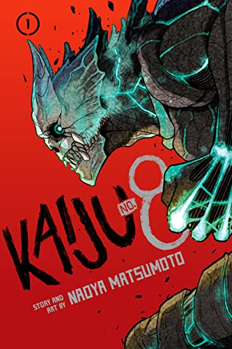
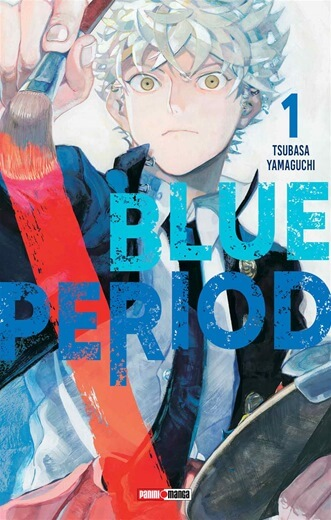

<!DOCTYPE html>
<html lang="en">

<head>
    <!-- BOOPSTRAP -->
    <meta charset="utf-8">
    <meta name="viewport" content="width=device-width, initial-scale=1">
    <title>bootstrap</title>
    <link href="https://cdn.jsdelivr.net/npm/bootstrap@5.2.0-beta1/dist/css/bootstrap.min.css" rel="stylesheet"
        integrity="sha384-0evHe/X+R7YkIZDRvuzKMRqM+OrBnVFBL6DOitfPri4tjfHxaWutUpFmBp4vmVor" crossorigin="anonymous">

    <!-- Iconos -->
    <script src="https://kit.fontawesome.com/8f5c9daf85.js" crossorigin="anonymous"></script>

    <!-- Fuentes -->
    <link rel="preconnect" href="https://fonts.googleapis.com">
    <link rel="preconnect" href="https://fonts.gstatic.com" crossorigin>
    <link href="https://fonts.googleapis.com/css2?family=Lobster&display=swap" rel="stylesheet">

    <!-- Mi estilo -->
    <link rel="shortcut icon" href="../img/Simbolo nara.jpg">
    <link rel="stylesheet" href="../css/style.css">
</head>

<body>
    <script src="https://cdn.jsdelivr.net/npm/bootstrap@5.2.0-beta1/dist/js/bootstrap.bundle.min.js"
        integrity="sha384-pprn3073KE6tl6bjs2QrFaJGz5/SUsLqktiwsUTF55Jfv3qYSDhgCecCxMW52nD2"
        crossorigin="anonymous"></script>
</body>

</html>
</head>

<body class="body">
    <nav class="navbar navbar-expand-lg bg-light">
        <div class="container-fluid">
            <a class="navbar-brand" href="./index.html">Inicio</a>
            <button class="navbar-toggler" type="button" data-bs-toggle="collapse"
                data-bs-target="#navbarSupportedContent" aria-controls="navbarSupportedContent" aria-expanded="false"
                aria-label="Toggle navigation">
                <span class="navbar-toggler-icon"></span>
            </button>
            <div class="collapse navbar-collapse" id="navbarSupportedContent">
                <ul class="navbar-nav me-auto mb-2 mb-lg-0">
                    <li class="nav-item">
                        <a class="nav-link" href="./figuras.html">Figuras</a>
                    </li>
                    <li class="nav-item">
                        <a class="nav-link" href="./merchandising.html">Merchandising</a>
                    </li>
                    <li class="nav-item">
                        <a class="nav-link" href="./manga.html">Manga</a>
                    </li>
                    <li class="nav-item">
                        <a class="nav-link" href="./contacto.html">Contacto</a>
                    </li>
                </ul>
                <form class="d-flex" role="Buscar">
                    <input class="form-control me-2" type="Buscar" placeholder="Buscar" aria-label="Buscar">
                    <button class="btn btn-outline-success" type="submit">Buscar</button>
                </form>
            </div>
        </div>
    </nav>

    <!-- ENCABEZADO -->
    <header class="header2">
        <h1>SHIKA~MANGA</h1>
    </header>

    <!-- CONTENIDO PRINCIPAL  -->
    <main>
        <section class="primeraSeccion3">

            <h2>¡MANGA & ANIME - RESEÑAS - OPIÑONES - FIGURAS - FUNKOS!</h2>

            <p> El manga japonés abarca una extensa variedad de géneros y llega a públicos diversos. Es una
                parte muy importante del mercado editorial de Japón y motiva múltiples adaptaciones a distintos
                formatos: series de animación, conocidas como anime, o de imagen real, películas, videojuegos y
                novelas.
                Cada semana o mes se editan nuevos tomos con entregas de cada serie, protagonizadas por héroes con
                grandes aventuras.
                En el manga las viñetas y páginas se leen de derecha a izquierda, la mayoría de los mangas
                originales que se traducen a otros idiomas ha respetado este orden. El más popular y reconocido
                estilo de manga tiene otras características distintivas.</p>
        </section>

        <section class="segundaSeccion3">
            <div>
                
                
                
                
            </div>

            <h3>
                Una palabra que defina la obra? INTERESANTE

                Porque? El objetivo del proyecto Blue Lock es "crear al mejor delantero, un goleador egoísta" y
                banco mucho el tratar de basar una obra de este género en un objetivo individual y no en uno grupal
                como nos tienen acostumbrados.
                Los personajes TODOS me llaman la atención, Jinpachi Ego y Anri dos personajes súper interesantes,
                los jugadores que comparten equipo con el prota también son bastante particulares y prácticamente
                los vemos poco y nada, pero a pesar de eso llaman mucho la atención.
                El prota es Isagi, un delantero promedio que calificó 299 en el proyecto de Blue Lock y justamente
                eso me llamo la atención, que no es el mejor desde el comienzo sino que va en busca de ese puesto y
                eso propone un desarrollo interesante.

                Otra cosa que me gustó mucho es el dibujo, los paneles dónde hay gambetas, las expresiones en
                ciertos momentos de los personajes, la verdad que lo disfrute una banda!
            </h3>

            <div>
                <button>MAS INFORMACION SOBRE FIGURAS</button>
                <button>RECIBIR AVISOS DE PUBLICACIONES</button>
            </div>

            <div>
                
                
                
                
            </div>

            <h3>
                Sung Jinwoo es un cazador del rango E al cual lo denominan el cazador más débil del mundo, realiza
                este trabajo no por gusto sino para poder pagar los gastos médicos de su madre y mantener a su
                hermana.
                Al entrar a una mazmorra de clase E descubren que es una doble mazmorra ya que se encuentran con una
                entrada inmensa que los lleva a un salón lleno de estatuas bastante particulares, pero
                principalmente destacaba una demasiado grande que parece un rey sentado en su trono.

                A simple viste parecía ir bien encaminado el grupo, pero todo cambia cuando uno compañero quiere
                salir del salón y es atacado por una estatua causándole la muerte, en ese preciso momento Jinwoo
                gira para ver la estatua sentada y se da con que los estaba observando, pero no solo es eso ya que
                comienza a irradiar una clase de destello amarillo de sus ojos causando un ataque descomunal dejando
                a todos aterrorizados y dando comienzo de esta forma a la historia del cazador más débil del mundo.

                Ahora toca hablar de que me dejo este primer tomo y la verdad que en cuanto a la historia no me
                sorprendió mucho por ahora PEROOOOO a pesar de no parecerme una super historia disfrute una banda la
                lectura porque el arte y la edición acompañan de una manera TREMENDA todo lo que pasa.

                Hay momentos donde los diálogos son escasos o directamente no hay, pero con solo ver el dibujo uno
                se da cuenta de que esta pasando, de la desesperación y el miedo que viven. Los detalles del dibujo
                y los colores que maneja hacen que pases un par de hojas y vuelvas para atrás a preciar de nuevo
                todo lo que esta pasando.
            </h3>

            <div>
                <button>MAS INFORMACION SOBRE MANGAS</button>
                <button>RECIBIR AVISOS DE PUBLICACIONES</button>
            </div>

        </section>

        <form action="#" method="GET" class="form">
            <h3>¡SUSCRIBITE!</h3>
            <div>
                <input type="text" placeholder="Nombre completo">
                <input type="email" placeholder="Email">
                <input type="submit" value="Enviar">
            </div>
        </form>
    </main>

    <!-- PIE DE PAGINA -->
    <footer class="footer">
        <i class="fa-brands fa-facebook"></i>
        <i class="fa-brands fa-instagram"></i>
    </footer>

</body>

</html>